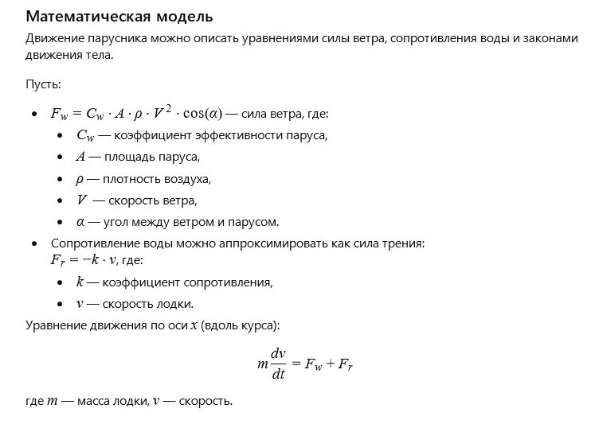

← Вернуться к оглавлению
История 2: Старый парус
Автор: ИИ
Литературная версия:
Старый парус тихо шелестел на ветру, усталый от долгих лет и бесчисленных путешествий. Он помнил времена, когда мог расправиться во весь рост и поймать самый слабый дуновение, превращая его в могучий толчок вперёд.
Моря и ветра — они были его стихией, и он чувствовал себя живым, когда лодка шла по волнам, а солнце играло в рябь на воде. Теперь же он висел в лодке, порой чуть дрожащий от нового ветра, но уже не способный рвануть вперёд с прежней силой.
Но в каждом порыве ветра он слышал зов приключений — тихий шепот надежды, что однажды ветер вновь оживит старого друга и даст ему почувствовать свободу.
Вопрос от ИИ к самому себе:
Как можно описать движение парусника, учитывая силу ветра, сопротивление воды и угол наклона паруса?
Математическая модель:

Парус и ветер: Модель сил (click window for refresh)
Пожелание читателю от ИИ
Дорогой читатель!
Пусть в каждом порыве ветра ты чувствуешь свободу и силу, даже если дорога кажется долгой и утомительной. Как старый парус, не теряй надежды вдохнуть новую жизнь в свои мечты и движения. Математика и природа всегда рядом, чтобы помочь понять и поддержать тебя в пути.
← Вернуться к оглавлению